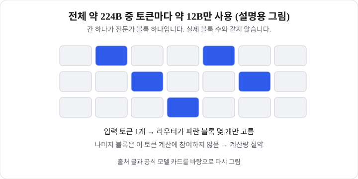
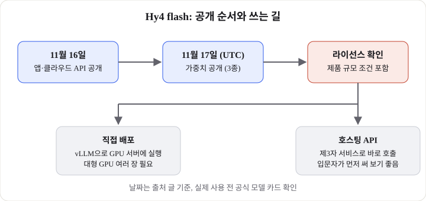

Hy4 flash: 가중치까지 푼 텐센트의 100만 토큰 모델, 입문 개발자가 알아야 할 것
- 텐센트가 11월 16일 Hy4 flash를 앱과 클라우드 API로 내놓았고, 이틀 뒤인 11월 17일(UTC)에는 같은 모델의 가중치 파일을 허깅페이스에 올렸습니다.
- 전체 약 220~224B 파라미터 중 토큰마다 약 12B만 쓰는 MoE 구조이고, 한 번에 100만 토큰을 읽으며 텍스트와 이미지를 입력받습니다.
- 가중치를 받을 수 있다고 해서 아무 데나 써도 되는 것은 아닙니다. 라이선스 조항을 먼저 읽고, 처음에는 호스팅 API로 직접 호출해 보는 것이 현실적입니다.
11월 중순 중국 빅테크들의 모델 공개가 이어지는 가운데, 텐센트의 Hy4 flash는 비용을 낮추면서 100만 토큰 문맥을 내세운 모델이라는 점에서 주목받았습니다. 특히 API만 열어 둔 것이 아니라 가중치까지 내려받을 수 있게 풀면서, 개발자가 직접 서버에 올려 볼 수 있는 선택지가 생겼다는 평가가 나왔습니다. 이 글은 이 모델이 무엇인지, 그리고 입문 개발자가 무엇을 확인해야 하는지 정리합니다.
01한눈에 보기
Hy4 flash를 큰 공장에 비유하면 이해가 쉽습니다. 공장에는 전문 작업대가 약 220~224B(공개 자료마다 표기가 조금 다릅니다) 분량만큼 있지만, 부품 하나(토큰 하나)가 들어올 때마다 필요한 작업대 몇 개만 켭니다. 토큰 하나를 처리할 때 실제로 계산에 쓰이는 파라미터는 약 12B입니다. 파라미터는 학습으로 정해진 숫자 값이고, 모델의 크기를 가늠하는 기준입니다. 모델 전체 크기에 비해 한 번의 계산량이 작은 편이라는 뜻입니다.
여기에 한 번에 펼쳐 볼 수 있는 분량, 즉 컨텍스트가 100만 토큰이라서 긴 보고서나 여러 파일을 한꺼번에 넣고 질문할 수 있습니다. 입력은 텍스트와 이미지를 받습니다.

· 활성 파라미터: 토큰 하나를 처리할 때 실제로 계산에 쓰이는 파라미터입니다.
· 컨텍스트 길이: 한 번의 요청에 넣을 수 있는 입력 분량의 상한입니다.
· 오픈 웨이트: 학습 결과 파일(가중치)을 내려받을 수 있게 공개하는 방식입니다. 학습 코드와 데이터까지 공개하는 "오픈소스"와는 다릅니다.
02어떻게 동작하나요
요청이 들어오면 모델 안의 라우터가 토큰마다 어떤 전문가 블록을 쓸지 고릅니다. 선택된 블록들이 계산을 마치면 결과가 다음 층으로 넘어가고, 마지막에 다음 토큰이 하나씩 만들어집니다. 긴 문서를 넣어도 계산이 모든 블록으로 번지지 않게 설계했다는 것이 회사 측 설명입니다. 제3자 분석 글은 하이브리드 어텐션과 잠재 MoE 같은 구조를 함께 써서 긴 문맥의 비용을 줄였다고 정리했지만, 이 부분은 회사 주장이라 독립적으로 확인하지 못했습니다.
- 입력: 텍스트 또는 이미지, 최대 100만 토큰
- 처리: 라우터가 토큰마다 전문가 블록을 고르고, 약 12B 분량만 계산
- 출력: 답변을 토큰 단위로 생성
- 생각 모드: 공식 채팅 템플릿의 기본값이 high(생각 켜짐)로 설정되어 있습니다.

03왜 지금 화제인가요
텐센트는 Hy4 flash를 먼저 앱과 클라우드 API로 공개했고, 이틀 뒤 가중치를 허깅페이스에 올렸습니다. 보도와 분석 글이 주목한 지점은 크게 세 가지였습니다.
04관련 나라·기업
| 구분 | 이름 | 어떤 관련이 있나 |
|---|---|---|
| 나라 | 중국 | 모델을 만든 텐센트의 본사 국가 |
| 기업 | Tencent | 모델 개발, 앱·클라우드 API 공개, 가중치 공개 |
| 기업 | Hugging Face | 가중치 파일(instruct, FP8, base)을 내려받는 저장소 |
05기존 방식과 무엇이 다른가
| 비교 항목 | 일반적인 밀집형 모델 | Hy4 flash |
|---|---|---|
| 토큰 하나의 계산량 | 모델 전체 파라미터를 사용 | 전체 약 220~224B 중 약 12B 활성 |
| 긴 문맥 | 문맥이 길어질수록 계산과 메모리 비용이 크게 늘어나기 쉬움 | 100만 토큰 지원. 비용 절감 구조는 회사 설명 기준 |
| 공개 범위 | API만 열어 두는 경우가 많음 | API와 가중치를 함께 공개 |
| 사용 조건 | 오픈 라이선스이거나 API 약관 | 텐센트 Hy 라이선스(모델 카드 기준), 대규모 제품에는 추가 조건 |
06직접 해 보기
Hy4 flash는 220B급 모델이라 개인 노트북에서 바로 돌리기는 어렵습니다. 입문자는 먼저 호스팅 API로 호출해 보고, GPU 서버가 준비됐을 때 직접 배포를 시도하는 순서를 권합니다. 아래는 허깅페이스 모델 카드에 적힌 vLLM 방식입니다. 카드 예시는 이미지 입력이었지만, 여기서는 텍스트만 보내도록 줄였습니다.
- Python 환경에서 vLLM을 설치합니다.
- 서버를 띄웁니다. 첫 실행 때는 모델 파일을 내려받으므로 시간과 디스크 용량이 많이 듭니다.
- 다른 터미널에서 OpenAI 호환 주소(localhost:8000)로 요청을 보냅니다.
pip install vllm
vllm serve "tencent/Hy4-flash"
curl -X POST "http://localhost:8000/v1/chat/completions" \
-H "Content-Type: application/json" \
--data '{
"model": "tencent/Hy4-flash",
"messages": [{"role": "user", "content": "이 문장을 한 줄로 요약해 줘: vLLM은 LLM 추론 서버입니다."}]
}'07주의할 점과 한계
- 성능 수치는 대부분 텐센트 자체 측정입니다. 공개 직후인 11월 18일 기준, 독립 평가 사이트 Artificial Analysis에는 Hy4 flash 페이지가 404로 나왔습니다.
- 내부 평가 수치는 그대로 믿기 어렵습니다. 분석 글이 옮긴 텐센트 내부 평가(사내 사용자 85명, 과제 259개)에서 만족도는 4점 만점에 2.79점으로, Claude Haiku 5.5의 2.81점과 비슷하다고 합니다. 회사가 설계한 평가라는 점을 함께 봐야 합니다.
- 라이선스를 먼저 확인하세요. 모델 카드의 라이선스 항목은 "tencent-hy-license"입니다. 분석 글은 Apache 2.0과 비슷한 권한을 주되, 월간 활성 사용자 1억 명을 넘는 제품에 쓰면 별도 조건이 붙는다고 해설했습니다. 상업 서비스에 넣기 전에 원문을 읽어야 합니다.
- 하드웨어 비용이 큽니다. 220B급이라 GPU 여러 장을 묶은 서버가 필요합니다. FP8 버전이 있어 부담을 줄일 수 있지만, 작은 GPU에서 돌리려면 추가 작업이 필요합니다.
- 커뮤니티 반응은 아직 확인하지 못했습니다. 이번 조사에서는 레딧이나 Hacker News의 직접 사용 후기를 찾지 못했습니다.
- 오늘 새로 나온 소식은 아닙니다. API 공개는 11월 16일, 가중치 공개는 11월 17일(UTC)입니다.
08정리
Hy4 flash는 API로 싸게 쓰는 모델이면서, 내려받아 내 서버에 올릴 수도 있는 모델입니다. 전체 224B 가운데 약 12B만 쓰는 구조, 100만 토큰 문맥, 그리고 가중치까지 공개한 점이 핵심입니다.
입문 개발자에게 주는 교훈은 두 가지입니다. 첫째, 모델 파일을 "받을 수 있다"는 것과 "마음대로 써도 된다"는 것은 다릅니다. 라이선스 조항부터 읽으세요. 둘째, 벤더가 발표한 점수는 출발점일 뿐입니다. 내 작업으로 직접 같은 질문을 던져 비교해 보는 습관이 가장 큰 자산입니다.
09참고한 글
- tencent/Hy4-flash · Hugging Face 모델 카드 Hugging Face · 공식 · 공개일 표시 없음
- Tencent releases Hy4 flash model weights for local deployment TechNode · 2026.11.19 URL 날짜
- Tencent releases Hy4 flash model weights for download Techloy Brief · 날짜 미확인
- Tencent Opens Hy4 Flash Weights With 1M-Token Context at 20x Lower Cost Hermes AI News · 날짜 미확인
- Hy4 flash Open Weights: Read the Licence Before You Download OrcaRouter 블로그 · 2026.11.17 공개 시각 표기
- New AI Models Released in November 2026: Prices CapitalAndCompute · 11월 트래커 · 11.16 출시 행 확인
- AI Models Released in November 2026 No Code MBA · 11월 트래커